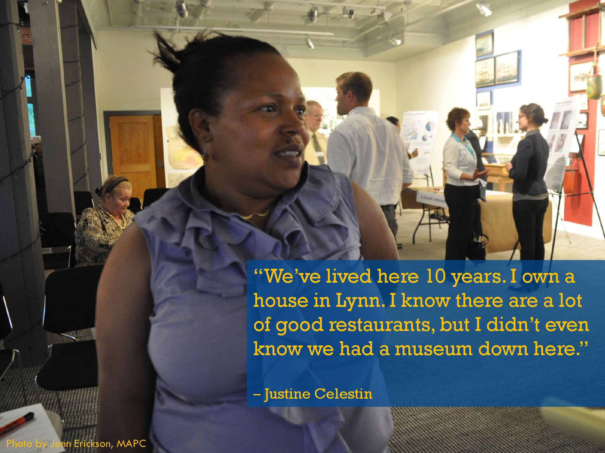
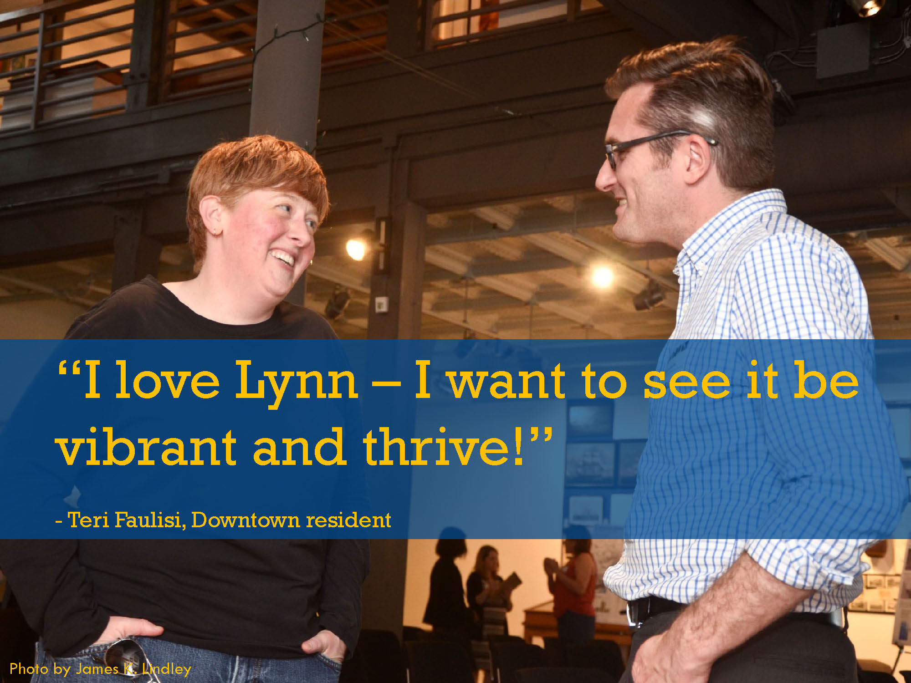
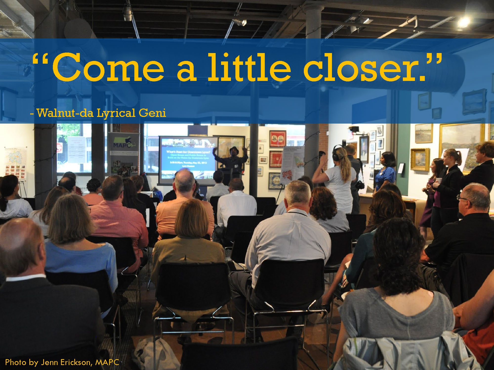

|

MAPC conducted extensive outreach for this event. We learned that many Lynners use social media and other Internet-based communications very actively, and we asked the Team of Advisors and other community leaders to help us spread the word online as well as in person. We also posted English and Spanish flyers in Downtown storefronts. The event was a lot of fun, but also very informative, both for the participants and for the project team! Many of the images throughout this website are from that evening, including photographs by James K. Lindley and Jennifer Erickson. |
|  |
|  |
 |
 DTL & MAPC in the blogosphere! Read what Downtown resident Corey Jackson said at DowntownLynn.com and what MAPC Community Engagement Intern Tien Le wrote on MAPC's Planning 101 blog about this public forum.
 |
|  |
Open House & Public Forum
On Thursday, May 23, 2013 the MAPC project team held an Open House and Public Forum at the Lynn Museum. MAPC, the Team of Advisors, and other community leaders reached out to dozens of individuals, groups, and organizations to raise awareness about the project and to invite them to the event. MAPC flyered several Downtown businesses with flyers in English as well as Spanish. MAPC also reached out by directly contacting those who had already participated in the project, using a Facebook invitation as well as sending information by public post or private message to several Lynn-related Facebook pages and personal profiles of individuals we had connected with. Thanks to support from many community leaders, information was posted in community newsletters and magazines. The Facebook event invitation was also a place to host a conversation about ideas for Downtown Lynn online.
The agenda included an "Open House" which featured refreshments from Downtown Lynn businesses: Dominican food from Rincon Macorisano and cupcakes from Cakes by NeeNee, an opportunity to view the exhibits at the museum and mingle with other participants, and a gallery of posters and participation stations. The posters featured data and maps about Downtown Lynn demographics, community assets, transportation networks, zoning regulations, property conditions, and public and private investments made in Downtown. Alongside these posters were tables set up with brown paper, markers, and sticky notes with questions about what's next for Downtown Lynn. Participants were invited to share their experiences and opinions about what they envision for Downtown, using the information presented on the posters to prompt conversation and commentary. MAPC staff were available at the participation stations as well as floating around the room to collect quotes from participants. MAPC also hired Spanish-language interpreters to facilitate participation in all aspects of the meeting for Spanish speakers.
The more structured portion of the evening's agenda, the "Public Forum," opened with words of inspiration from Lynn's own spoken word and hip-hop artist, Walnut-da Lyrical Geni. Walnut invited participants to use this opportunity to "come closer": to get to know one another, to explore and understand the data, and to get involved in building a better Downtown Lynn. Following his performance, Project Manager Manisha Bewtra introduced key aspects of the project and led the audience through a series of questions using electronic polling devices. Each audience member was given their own device to answer questions about themselves, as well as questions about Downtown and its future, and results of everyone's responses were immediately displayed so participants could get a sense of who else was in the room and what they were thinking.
Walnut performed again to "rap it up," and participants were again asked to visit the participation stations and provide additional comments if they wished to do so. View the two presentations on the right to see what participants had to say.
About 40 people attended this event, and more than a third of these participants had not previously met any MAPC staff or participated in any events related to this project. Similarly, about a third of participants were not very familiar with previous and current planning efforts such as the Waterfront Master Plan, Washington Street/Sagamore Hill Gateway District Plan, Downtown/Market Street Vision Plan, the Northeastern Economic Development Self Assessment Tool, the Downtown Lynn Cultural District, or recent local investments and zoning changes. Another third indicated they were only somewhat familiar.
Participants included Downtown residents (22%), residents of Lynn who live outside Downtown (46%), and people who live outside Lynn (32%). The audience included renters and homeowners, with a variety of ages, professional backgrounds, and household income levels. More than half of the audience owned property and businesses in Lynn. Three-quarters of the audience identified as white, and 17% identified as Hispanic or Latino. Similarly, more than three-quarters of the audience primarily speak English at home and about 16% speak Spanish at home. While participation at the meeting seemed to represent diversity in terms of household income, homeownership, property and business ownership, and professional affiliations, the composition of the audience was less racially, ethnically, and linguistically diverse than the community.
For graphs showing the results of each keypad polling question, click through the audience participation presentation shown above. A few highlighted results regarding Downtown's the experience of visiting Downtown, needed amenities, and types of development desired are included below.
Community assets: Participants identify some of Downtown Lynn's assets as its arts and culture scene, variety of restaurants, multicultural diversity, historic architecture, the commuter rail, and variety of restaurants. They identified many specific destinations and other community assets as well.
Walking environment and safety: Participants generally feel safe walking in Downtown during the day, and most feel somewhat safe during the evening. But more than half of the participants do not think that Downtown Lynn offers an attractive, inviting environment for walking around. In another question, 38% of participants answered that the amenity Downtown needs most is more attractive streets, sidewalks, buildings, and lots.
Things to do in Downtown: Besides more attractive streets, sidewalks, buildings, and lots, 29% of the audience identified "more dining and entertainment options" as the amenity Downtown needs most, and 21% identified "activities and destinations for families" as the amenity Downtown needs most. 94% of the audience wanted to see more shopping, eating and entertainment options in Downtown Lynn, and want to see this area become a regional entertainment, dining, and shopping destination.
Would you live in Downtown? Two-thirds of the participants would not like to live in Downtown the way it is now. If Downtown had more amenities, however, 56% indicated they would like to live there, and only 25% of the audience said they still would not like to live in Downtown.
Types of development needed: Three-quarters of the participants said they would like to see more residential development in Downtown Lynn, while 22% were not sure and 3% of the participants disagreed. Nearly all participants, 94%, said they would like to see more "mixed use" development with retail, office, and residential combined.
Barriers to revitalization: Participants identified the following as the biggest barriers in the way of a thriving future for Downtown: "Not being able to attract people to spend their money here" (27%), "The perception people have of Lynn" (21%), "Regulations and politics make new development harder" (21%), and "Empty buildings and environmental hazards" (21%).
Reasons that the audience selected for why they attended the event were: because they are really excited about Downtown's future (45%), they want to participate in a civic process (28%), they want to get involved in neighborhood activities (14%), they want to start a business or renovate property (10%), or they want to meet new people (3%).